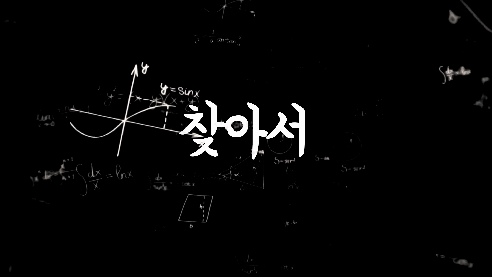

이번 포스팅에서는 허리 건강을 위한 새로운 무중력 자세 셋업을 통해 일상에서 느끼는 피로와 불편함을 줄이는 방법에 대해 이야기합니다. 나사에서 인증한 과학적 자세를 바탕으로 실제 데스크 환경에서 활용 가능한 팁을 공유합니다.
무중력 자세란?
- 무중력 자세의 정의
- 나사에서 인정한 과학적 자세
- 스카이 랩에서 발견된 역사
무중력 자세는 나사에서 인정한 중립적 자세로, 우주인들이 신체적으로 가장 편안한 상태에서 활동할 수 있도록 개발된 것입니다.
허리 통증과 자세의 상관관계
- 바른 자세의 중요성
- 허리 통증과 생활 습관
- 의사의 권고 사항
평소에 바른 자세를 유지하지 않으면 허리 통증이 생길 수 있으며, 이는 일이 진행됨에 따라 누적되어 나타나는 경향이 있습니다.

무중력 자세에 대한 탐구
- 무중력 자세 설명
- 컴퓨터 작업시의 위치
- 각 기업의 연구 결과
무중력 자세는 리클라이너와 비스듬히 기대는 의자에서 발생하는 일종의 편안한 자세로, 다양한 기업들이 이를 활용한 연구를 진행했습니다.
무중력 데스크 셋업 도전
- 셋업 마련 과정
- 시중의 제품 부재
- 직접 제작하기
현재 시중에 무중력 자세를 위한 제품이 부족하다는 점을 감안하여 직접 데스크 셋업을 만들어 보기로 했습니다.

셋업 후 사용 후기
- 편안함과 건강 문제
- 주요 장점
- 단점
셋업을 통해 일주일 동안 사용해본 결과, 허리와 어깨 통증이 줄고 타이핑이 편안하게 이루어지는 등 만족도가 높았습니다.

제품의 장단점
- 사이즈 조정의 유연성
- 팔걸이 조정 가능성
- 기능의 과다
- 기성 사이즈의 한계
기성 사이즈이지만 기능적으로 유연하게 조정할 수 있는 팔걸이와 다양한 각도 조절이 가능하여 편리하지만, 기능들이 많아 적응이 필요할 수 있습니다.
Tags: #무중력 자세 #허리 건강 #사이즈 오브 체어 #데스크 셋업 #근무 환경 개선 #이벤트 #의자 리뷰 #컴퓨터 사용 #자세 유지